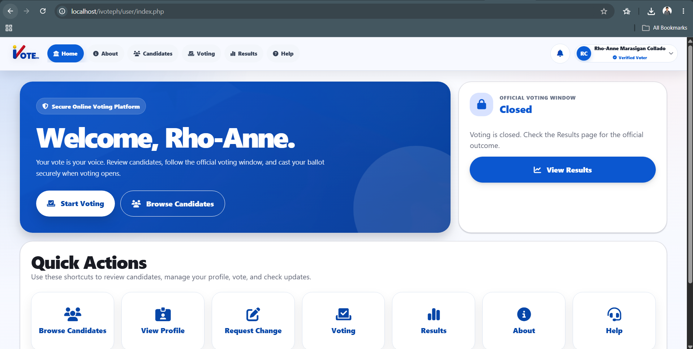
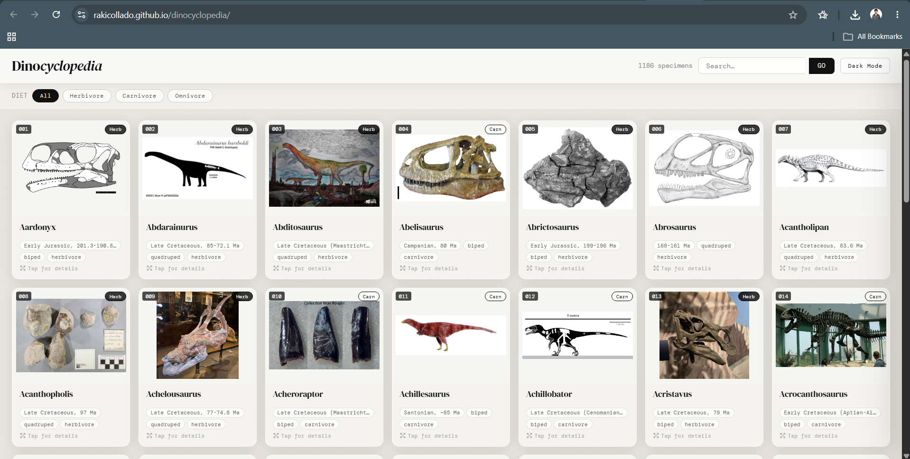
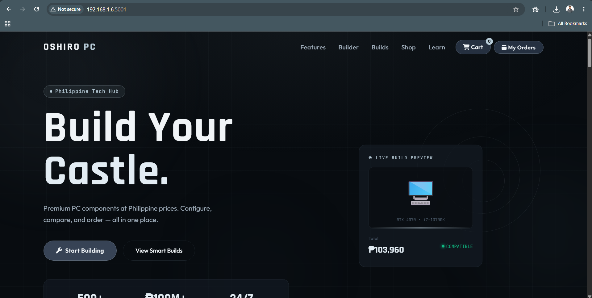
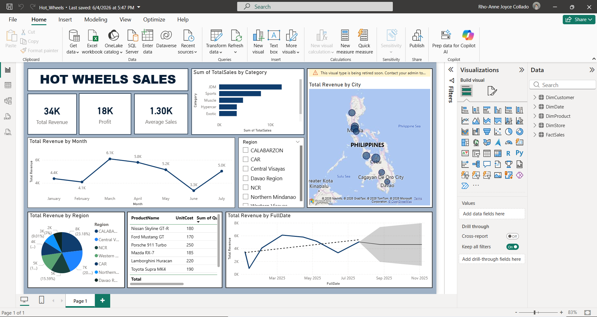
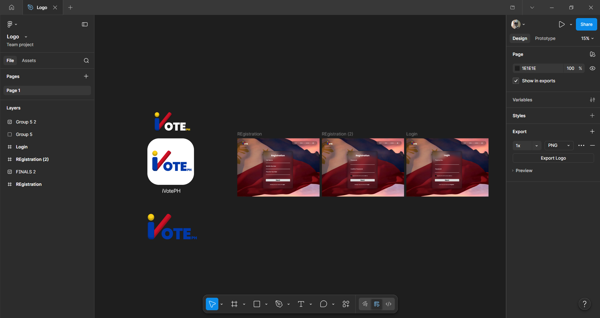
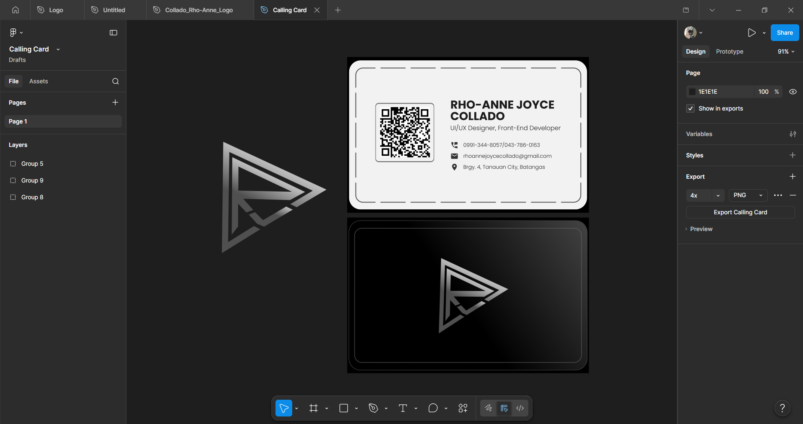
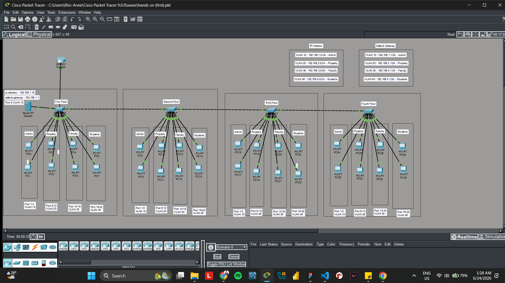
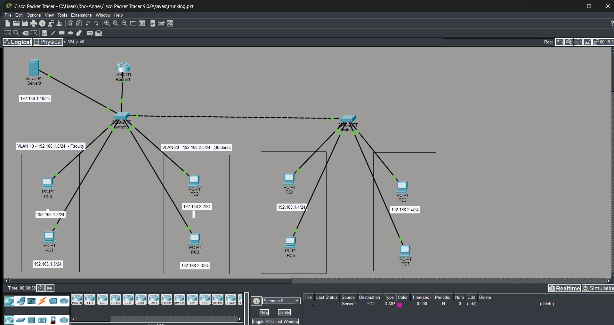
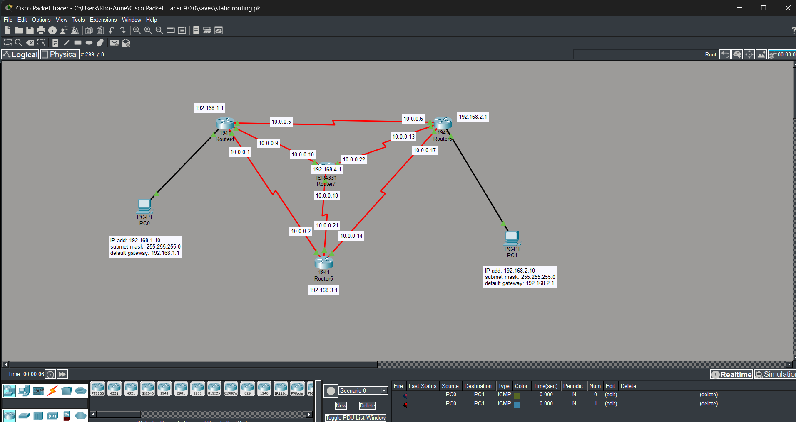

Projects
Well Executed Projects.
A scrollable showcase of some of my academic and hands-on IT projects in web development, networking, UI/UX design, and data analytics.

iVotePH Online Voting System
A web-based voting platform with user navigation, candidate browsing, voting, results, profile, and help sections.

Dinocyclopedia
A clean catalog-style website interface with searchable specimen cards, filters, and a simple visual layout.

Oshiro PC
A PC builder website concept for configuring, comparing, and ordering computer components.

Hot Wheels Sales Dashboard
A Power BI dashboard presenting sales, profit, category performance, regional revenue, product tables, and trend visuals.

iVotePH Figma Prototype
Prototype screens, user flows, and interface layouts for dashboard, profile, candidates, voting, ballot, results, and help pages.

Logo & Calling Card Design
Personal branding design work made in Figma, including logo exploration and a clean calling card layout.

VLAN Floor Network Topology
Cisco Packet Tracer topology practice using VLAN grouping, IP addressing, default gateways, switch ports, and multiple floors.

VLAN Trunking Simulation
A Packet Tracer activity focused on VLAN segmentation, trunk links, routers, switches, servers, and end-device connectivity.

Static Routing Simulation
Network simulation work involving routers, subnet addressing, gateways, and connectivity testing using ICMP packets.